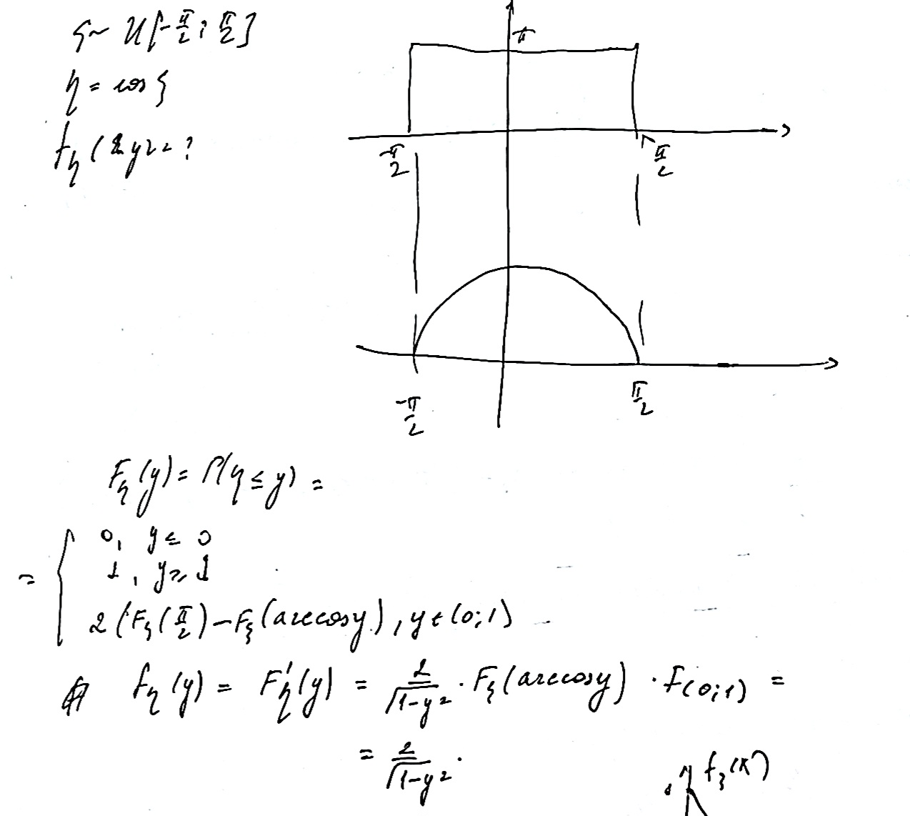

Плотность
борелевской функции от случайной величины
Пусть \((\Omega, \mathcal{F}, P)\) –
вероятностное пространство, \(\xi\) –
случайная величина на нем. Тогда для любой борелевской функции \(g(x)\) функция \(g(\xi(x))\) – случайная величина.
Посчитаем
\(f_{\eta}(x)\), где \(\eta = \sin(\xi)\)
Строим график!

Характеристическая функция
распределения
Определение: Пусть
\((\Omega, \mathcal{F}, P)\) –
вероятностное пространство, \(\xi\) –
случайная величина на нем.
\(\varphi_{\xi}(t) =
E(e^{it\xi})\)
Свойства характеристической
функции
Утверждение:
(корректность определения) \(\varphi_{\xi}(t)\) определена для любого
\(t \in \mathbb{R}\)
\(|\varphi_{\xi}(t)| \leqslant 1\)
и \(|\varphi_{\xi}(t)| = 1 \iff t =
0\)
\(\varphi_{\xi}(t)\) – равномерно
непрерывна по \(t\).
Доказательство:
Почему полезно?
Потому что преобразование Фурье и матан умеет с этим работать.
И
Утверждение: Если
\(\exists E\xi^k < \infty\), то
\(\exists \varphi_{\xi}^{(k)}(t)\) и
\(i^k\cdot E\xi^k =
\varphi^{(k)}(0)\).
Если \(\exists \varphi^{(2k)}(0)\),
то \(\exists E\xi^{2k} < \infty\) и
\(-\cdot E\xi^{2k} =
\varphi^{(2k)}(0)\).
Доказательство:
Домашняя работа 12
Задача:
Случайная величина имеет распределение с плотностью
\[f(x) = \frac1{\pi(1 + x^2)}\]
Найти плотность распределения случайной величины \(\eta = \frac1{\xi}\).
Доказательство:
Задача:
Случайная величина имеет равномерное распределение на отрезке \([0, 2]\). Найдите плотность распределения
случайной величины \(\eta = -\sqrt{\xi +
1}\).
Доказательство:
Задача:
Случайная величина равномерно распределена на отрезке \(\left[\frac{-\pi}2, \frac{\pi}2\right]\).
Найти плотность распределения случайной величины \(\eta = |\sin(\xi)|\).
Доказательство:
Задача:
Случайная величина имеет плотность распределения
\(f(x) =
\frac{x}{\sigma^2}e^{-\frac{x^2}{2\sigma^2}}, \,\,\,\, x >
0\)
Найти плотность распределения случайной величины \(\eta = e^{-\xi^2}\)
Доказательство:
Задача:
Пусть – случайная величина с непрерывной строго монотонной функцией
распределения \(F(x)\). Доказать, что
случайная величина \(\eta = F(\xi)\)
имеет равномерное распределение на отрезке \([0, 1]\).
Доказательство:
Задача:
Докажите, что характеристическая функция является вещественной тогда
и только тогда, когда она четная.
Доказательство:
Задача:
Могут ли функции \(\sin(t), \cos(t),
\cos^2(t), \cos(t^2), e^{-i|t|}, e^{-4t}\) быть
характеристическими функциями некоторых случайных величин? Если могут,
укажите соответствующие распределения.
Доказательство:
Задача:
Выразите математическое ожидание и дисперсию случайной величины
через ее характеристическую функцию.